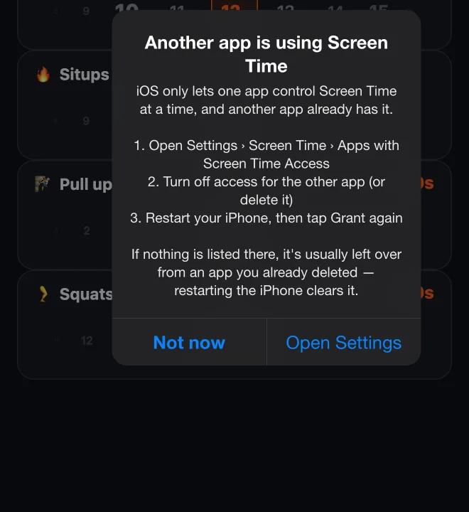
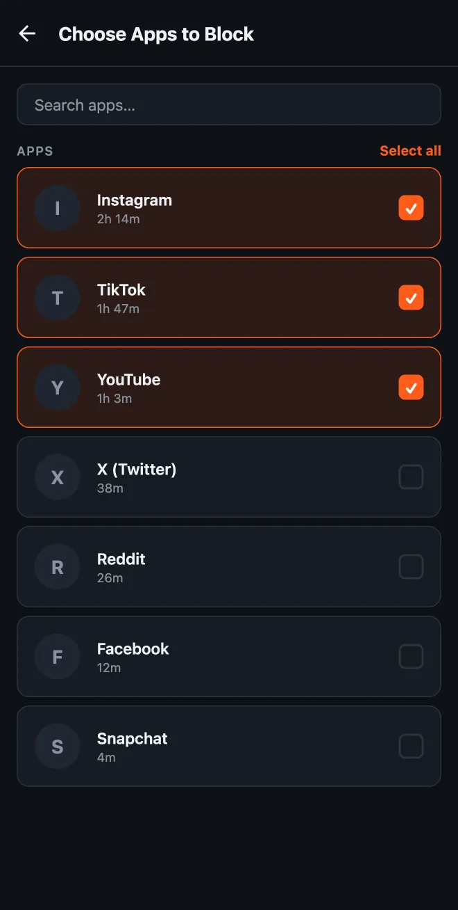

3 أشياء أتمنى أن تصلحها Apple في Screen Time API
أنا أصنع HonorFit، حاجب تطبيقات تكسب فيه وقتك أمام الشاشة بتمارين الضغط (نظام الشرف، بلا كاميرا). إنه التطبيق نفسه على iPhone وAndroid، الفكرة نفسها، والكود نفسه في معظمه. وبصراحة؟ نسخة Android أريح في الاستخدام.
وليس السبب أن Android أفضل في حجب التطبيقات. واجهة Screen Time API في iOS متينة جدًا في جزء الحجب نفسه. السبب أن iOS يقيّدك في ثلاثة أشياء محددة، ولا يبدو أن أيًا منها موجود لحماية المستخدمين. فهذه قائمتي، مع ما أطلبه من Apple. حاولت أن ألتزم بأشياء لا تكلف أحدًا أي خصوصية.
(إذا أردت النسخة التقنية التفصيلية عن البناء على هذه الواجهة، فقد كتبتها في مقالة منفصلة: ما لا تخبرك به وثائق Apple.)
1. لا يمكنك امتلاك أكثر من تطبيق واحد لمدة استخدام الجهاز في كل مرة
لنفترض أنك تستخدم Brick أو Opal أو one sec، وتريد تجربة HonorFit أيضًا. على iPhone لا تستطيع. حين يطلب التطبيق الثاني صلاحية مدة استخدام الجهاز، لا يعرض iOS حتى نافذة طلب الإذن. يرمي خطأً فقط يقول إن Family Controls متاح لتطبيق واحد فقط في كل مرة. رأيت هذا الخطأ بنفسي، ومطورون آخرون يواجهونه أيضًا.
لكي تبدّل، عليك الذهاب إلى الإعدادات ‹ مدة استخدام الجهاز ‹ التطبيقات التي لديها وصول إلى مدة استخدام الجهاز، وإيقاف التطبيق الآخر، وأحيانًا إعادة تشغيل هاتفك. صار HonorFit يكتشف هذا الخطأ ويرشد الناس خلال هذه الخطوات، لأن رسالة الخطأ الخام لا تعني شيئًا لشخص عادي.

والغريب في الأمر: حين قدّمت Apple هذا النوع من التفويض في WWDC22، قالت إن التفويض الفردي، بخلاف تفويض الرقابة الأبوية، يمكن أن تستخدمه أي عدد من التطبيقات على الجهاز. هذا ليس ما يحدث اليوم، ولم أجده موثقًا في أي مكان.
لماذا لا يخدم هذا مصلحة المستخدمين: الناس يجمعون بين الأدوات. قد يستخدم شخص ما Brick لجلسات تركيز صارمة في العمل، وHonorFit ليكسب تصفحه في المساء. لدى Apple أصلًا قاعدة لدمج القيود: حين تضبط عدة ManagedSettingsStore الشيء نفسه، فبحسب كلام Apple «الإعداد الأكثر تقييدًا يفوز دائمًا». تطبيق الأمر نفسه عبر التطبيقات سيتيح للناس استخدام الاثنين، والهاتف بهذه الطريقة لا يمكن إلا أن يصبح أكثر تقييدًا، لا أقل أبدًا.
2. مُنتقي التطبيقات مربك، والتطبيقات لا تستطيع تخصيصه
على iPhone، اختيار التطبيقات التي تريد حجبها يعني FamilyActivityPicker من Apple. إنها نافذة نظام لا يستطيع التطبيق تغييرها، باستثناء سطر نص في الأعلى وآخر في الأسفل. تفتح على قائمة فئات (التواصل الاجتماعي، الألعاب، الترفيه...)، وتدخل إلى الفئة لتجد التطبيقات الفعلية. على Android، أبني القائمة بنفسي، فيعرض HonorFit تطبيقاتك المثبتة مرتبة بحسب مقدار استخدامك لكل منها في آخر 24 ساعة.


شيئان يزعجانني في نسخة iOS:
- من السهل جدًا أن تحجب فئة كاملة بالخطأ. اضغط على صف الفئة بدل فتحها، وتكون قد اخترت كل تطبيق فيها، بما فيها التطبيقات التي ستثبتها لاحقًا. ولكثير من التطبيقات هذا ليس ما تريده أبدًا. أنت تريد إنستغرام وتيك توك، لا «التواصل الاجتماعي».
- لا ترى أي التطبيقات تلتهم يومك فعلًا. السبب الوحيد الذي يجعل أحدهم يفتح حاجب تطبيقات هو «أقضي وقتًا طويلًا جدًا على هاتفي». والمُنتقي هو اللحظة الوحيدة التي يقرر فيها ما سيحجبه، ولا يعطيه أي معلومة عن أين يذهب وقته. هاتفك يعرف بالضبط كم قضيت في كل تطبيق (الرقم موجود في الإعدادات)، لكن المُنتقي لا يعرضه.
هذا لن يكلف أي خصوصية. المُنتقي يرسمه iOS في عمليته الخاصة. التطبيق لا يرى أبدًا ما فيه، بل رموزًا مبهمة فقط لما اخترته. HonorFit لا يستطيع حرفيًا أن يعرف أي التطبيقات اخترت. فيمكن لـ iOS أن يعرض أوقات الاستخدام داخل المُنتقي، ولن يعرف التطبيق شيئًا. وApple تفعل شيئًا كهذا أصلًا مع امتدادات DeviceActivityReport، التي تعرض استخدامك داخل بيئة معزولة لا يستطيع التطبيق قراءتها.
- خيار في المُنتقي لاختيار فئات كاملة أو تطبيقات فقط، ليتمكن حاجب التطبيقات من عرض قائمة تطبيقات فقط دون اختيار فئات بالخطأ (وإخفاء المواقع إن لم يكن يستخدمها).
- خيار للترتيب بحسب وقت الشاشة المقاس وعرضه بجانب كل تطبيق، يرسمه iOS بحيث لا يرى التطبيق الأرقام أبدًا.
3. لا يمكنك رؤية عدّ تنازلي دقيق لوقتك المتبقي
في HonorFit، لا ينقص وقتك المكتسب إلا وأنت داخل تطبيق محجوب فعلًا. فالشيء البديهي الذي يجب عرضه هو عدّ تنازلي: «12:34 متبقية»، يتناقص وأنت تتصفح ويتوقف حين تخرج.
على Android هذا سهل. خدمة HonorFit في الخلفية تتحقق من التطبيق الظاهر على الشاشة كل ثانية، والإشعار يستخدم مؤقت العدّ التنازلي المدمج في Android، فيعيد شريط الإشعارات رسمه كل ثانية من تلقاء نفسه. تسحب الشريط للأسفل فترى بالضبط كم تبقى لك من الوقت، بالثانية.
على iPhone هذا غير ممكن، وإليك السبب:
- لا يخبر iOS التطبيق أبدًا حين تفتح تطبيقًا محجوبًا أو تخرج منه. كل ما تحصل عليه أحداث من نوع «تراكم هذا القدر من الاستخدام». يضبط HonorFit حدثًا لكل 15 ثانية من الاستخدام، وتُرسل إلى امتداد في الخلفية يحدّث الإشعار.
- الإشعار العادي لا يستطيع العدّ التنازلي بنفسه، فأقصى ما يستطيعه HonorFit هو تبديل النص كلما وصل حدث. لهذا يقول إشعار iPhone «~12:30 متبقية» مع علامة التقريب: إنه يقفز بخطوات من 15 ثانية.
- وتلك الأحداث لا تصل دائمًا في وقتها أيضًا. في iOS 26 رأيتها تتأخر، أو تصل عدة أحداث معًا.
- الأنشطة المباشرة (Live Activities) تستطيع العدّ التنازلي بنفسها، لكنها لا تستطيع التوقف مؤقتًا. لا شيء يخبر التطبيق أنك خرجت من إنستغرام، فسيظل النشاط المباشر يعدّ والهاتف على الطاولة، وهذا خطأ.
فيحصل مستخدمو iPhone على تقدير تقريبي، بينما يحصل مستخدمو Android على الرقم الحقيقي.
DeviceActivity بأن يشغّل عدًّا تنازليًا يرسمه iOS بنفسه: في إشعار، أو نشاط مباشر، أو الدرع، ولا يعمل إلا والتطبيقات المراقبة على الشاشة. iOS يتتبع هذا الاستخدام بالثانية أصلًا، فيمكنه عرض الوقت دون أن يعطي التطبيق أي شيء جديد. حتى استدعاءات بسيطة من نوع «فُتح التطبيق المحجوب / أُغلق» لامتداد المراقبة ستحل معظم المشكلة.هذا كل شيء
إنصافًا لـ Apple، نموذج الخصوصية هنا ممتاز فعلًا. التطبيق لا يعرف أبدًا ما الذي حجبته أو كم تستخدمه، وأكره أن يتغير ذلك. ولا شيء من الأشياء الثلاثة أعلاه سيغيّره. ستتيح فقط لتطبيقات iPhone أن تكون مفيدة بقدر نسخ Android الحالية.
إذا كنت تبني على مدة استخدام الجهاز أيضًا وتريد أيًا من هذه، فأرجوك قدّمها في Feedback Assistant. بحسب ما فهمت، التقارير المكررة هي ما يلفت الانتباه إلى الأشياء. وإذا أردت فقط تجربة التطبيق، فإن HonorFit مجاني على iPhone وAndroid. ربما يعجب بعضكم!